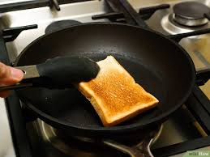
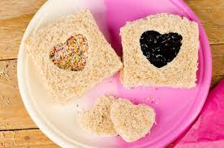
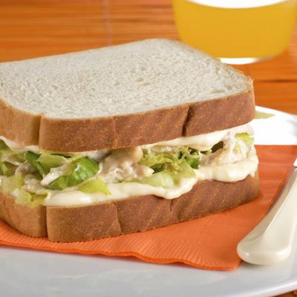

| Ingredientes | Imagen |
|
Pan de molde,
Tostadora,
Los ingredientes que quieras poner en el sándwich |  |
|---|
| Cómo se prepara | |
|---|
| 1 Coge dos rebanadas de pan de molde y con un cuchillo córtalas en forma de corazón. Primero corta una y, después, la colocas encima de la otra rebanada y haces lo mismo para que las dos tengan exactamente la misma medida. |  |
|---|
| 2 Mete las dos rebanadas en la tostadora para que queden doradas. |  |
|---|
| 3. Mete en el sándwich lo que más te apetezca o le guste a tu pareja. Aquí tienes algunas ideas:- En un bol haces una mezcla de lechuga cortada en juliana, atún, palitos de cangrejo troceados y mahonesa. Pones la mezcla encima de una de las rebanadas.- Untar las rebanadas con mantequilla o margarina. Poner una loncha de queso, otra de pavo y unas láminas de aguacate.- Poner en una de las rebanadas queso para untar y añadir unas lonchas de salmón ahumado. Trocear un pepinillo y ponerlo encima del salmón. |  |
|---|
| 4. Cuando ya hayas colocado el relleno, coloca encima la otra rebanada. |  |
|---|
| 5. Coloca el sándwich en un plato con una servilleta de color para darle un toque especial y listo para comer. |  |
|---|